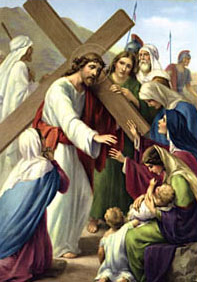

VIII. állomás: Jézus inti Jeruzsálem leányait

"Jeruzsálem leányai, ne miattam sírjatok! Magatokat és gyermekeiteket sirassátok! Mert íme, jönnek majd napok, amikor azt mondjátok: Boldogok a meddők, az anyaméhek, amelyek nem szültek, és az emlők, amelyek nem szoptattak! Akkor azt kezdik majd mondani a hegyeknek: Szakadjatok ránk! És a halmoknak: Takarjatok el minket! Mert ha a zöldellő fával ezt teszik, mi lesz a szárazzal?" (Lk 23,28-31) Ezek Jézus szavai, amelyeket azokhoz a jeruzsálemi asszonyokhoz intézett, akik siratták, így fejezve ki együttérzésüket az elítélttel. "Ne miattam sírjatok, hanem magatokat és gyermekeiteket sirassátok!" Akkor elég nehéz lehetett felfogni ezeknek a szavaknak az értelmét. Próféciát tartalmazott, amely hamarosan beteljesült. Kevéssel azelőtt Jézus Jeruzsálem felett sírt, előre megjósolva annak szörnyűséges sorsát, amely majd beteljesedik rajta. Most úgy tűnik, megint ehhez kapcsolja szavait: "Sirassátok gyermekeiteket..." Sirassátok, mert pontosan ők lesznek a tanúi, a részesei Jeruzsálem pusztulásának, annak a Jeruzsálemnek, amely "nem tudta felismerni látogatásának az idejét" (Lk 19,44). Amikor Krisztust követjük a keresztútján, és fellobban szívünkben a szenvedése iránti együttérzés, nem feledhetjük el ezt a figyelmeztetését sem. "Ha a zöldellő fával ezt teszik, mi lesz a szárazzal?" Nemzedékünknek, amely egy ezredévet hagy a háta mögött, inkább fel kellene ismernie "látogatásának idejét", minthogy Krisztus mártíriumán siránkozzék. Már feltündököl a feltámadás hajnala. "Íme, most van itt a kedvező idő, íme ez az üdvösség napja" (2Kor 6,2). Krisztus mindannyiunkhoz intézi a Jelenések könyvének szavait: "Íme, az ajtónál állok és zörgetek. Ha valaki meghallja szavamat, és kinyitja nekem az ajtót, bemegyek hozzá, vele étkezem, és ő énvelem. Aki győz, annak megadom, hogy velem együtt üljön trónomon, mint ahogy én is győztem és Atyámmal ülök az ő trónján" (3,20-21).
Krisztus, aki e világra jöttél, hogy meglátogasd azokat, akik az üdvösségre várakoznak, add, hogy nemzedékünk felismerje látogatásod idejét, és része legyen a megváltás gyümölcsében. Ne engedd, hogy rajtunk és a következő század szülöttei fölött sírni kelljen, mivel visszautasítottuk az irgalmas Atya kezét. Neked Jézus, Sion szűz leányának Fia, legyen tisztelet és dicsőség mindörökkön örökké. Amen.